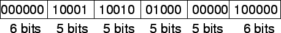

จากคำสั่งภาษาเอสแซมบลี่ของ MIPS
add $t0, $s1, $s2
สามารถแปลงแอสแซมบลีออกมาเป็นภาษาเครื่องของ MIPS ได้เป็นตัวเลขได้ดังนี้
แต่ละส่วนของคำสั่งเรียกว่า ฟิลด์ (Field) ฟิลด์แรก และ ฟิลด์สุดท้ายของคำสั่งเป็นตัวบอกคอมพิวเตอร์ MIPS
ว่าเป็นคำสั่งที่ระบุ เป็นคำสั่งบวก ฟิลด์ที่สองเป็นการบอกค่ารีจีสเตอร์ที่เป็นตัวกระทำการประมวลผลตัวแรก ในที่นี้คือ
$s1 ที่มีค่าเท่ากับ 17 และต่อมาเป็นตัวแปรตัวที่สองได้แก่ $s2 ที่มีค่าเท่ากับ 18
ในฟิลด์ที่สี่เป็นการระบุรีจีสเตอร์ที่เก็บผลลัพธ์ ได้แก่ $t0 ที่มีค่าเท่ากับ 8
และแปลงเป็นไบนารี่ที่แสดงคำสั่งได้ดังนี้

เพื่อแสดงความแตกต่างของคำสั่งแอสแซมบลี่ คำสั่งที่แสดงโดยตัวเลขขั้นต้นเรียกว่าภาษาเครื่อง หรือ Machine Language
โครงสร้างของคำสั่งที่แสดงเป็นฟิลด์ต่างๆ เรียกว่า รูปแบบของคำสั่งหรือ Instruction Format ในคอมพิวเตอร์ MIPS ขนาดของคำสั่งมีค่าคงที่คือเท่ากับ 32 บิท ที่มีขนาดเท่ากับขนาดข้อมูลหนี่ง Word การกำหนดขนาดของคำสั่งหนึ่งคำสั่งให้เท่ากับขนาดข้อมูลหนึ่ง Word นั้นทำให้การออกแบบทำได้ง่ายตามหลักการพื้นฐานการออกแบบ Simplicity favor regularity
ส่วนใหญ่แล้วการเขียนคำสั่งสามารถเขียนได้โดยใช้ตัวเลขฐาน 16 ที่สามารถแปลงระหว่างเลขไบนารี่ได้โดยการจับกลุ่มเลขไบนารี่เป็นกลุ่ม 4 บิทและทำการแปลงโดยตรง (ลองไปทำดู)